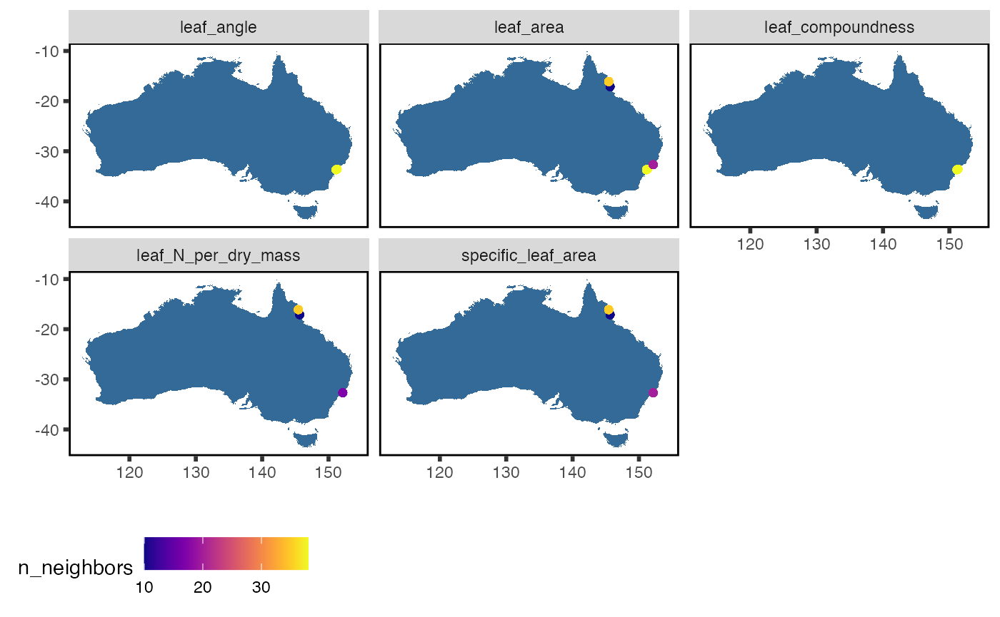
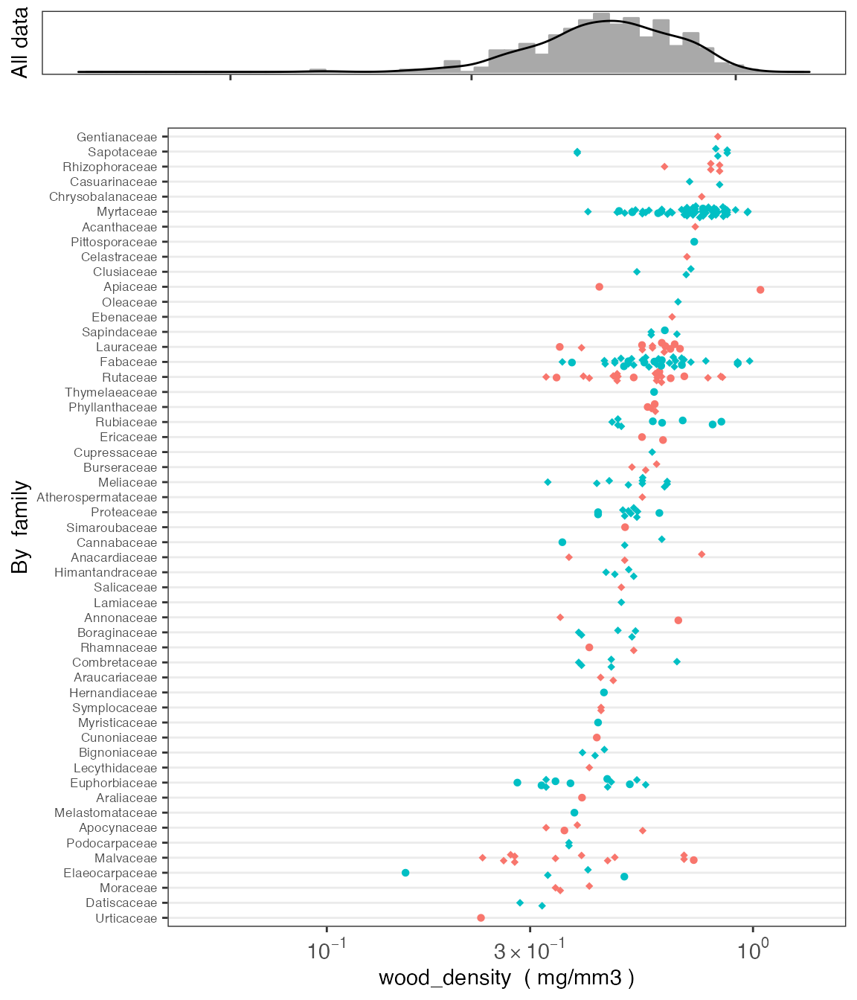
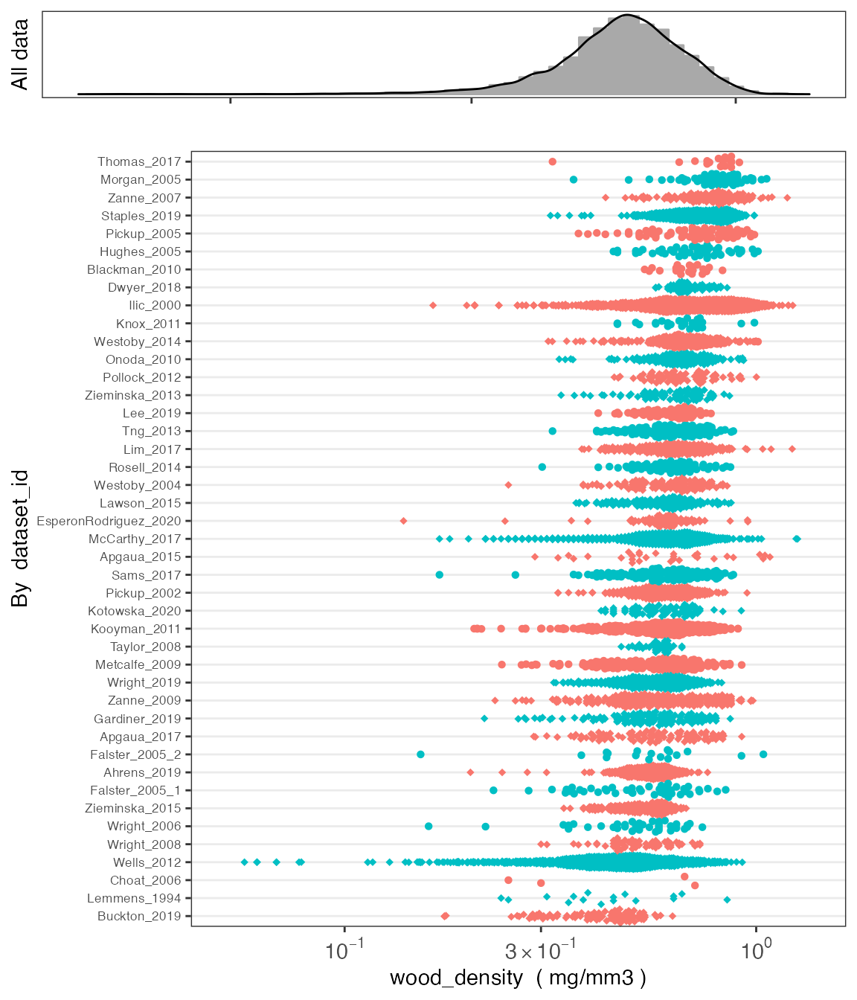

The austraits package is designed to aid users to access data from AusTraits, a curated plant trait database for the Australian flora. This package contains several core functions to wrangle and visualise data. Below we included a tutorial to illustrate how to use these functions in greater detail.
austraits is still under development. To install the current version from GitHub
#install.packages("remotes")
remotes::install_github("traitecoevo/austraits", build_vignettes = TRUE)
# Load the austraits package
library(austraits)By default, load_austraits will download austraits to data/austraits and will reload it from this location in the future. You can also specify where you want to download austraits by providing your own file path.
austraits <- load_austraits("data/")Note the austraits object is a very long list with various of elements. If you are not familiar with working with lists in R, we recommend having a quick look at this tutorial. To learn more about the structure of austraits, check out the structure of the database.
class(austraits)#> [1] "list"
# The names of the different lists in `austraits`
names(austraits)#> [1] "traits" "sites" "contexts"
#> [4] "methods" "excluded_data" "taxonomic_updates"
#> [7] "taxa" "definitions" "contributors"
#> [10] "sources" "build_info"
# The structure of the `traits` table only
str(austraits$traits)#> tibble [905 × 12] (S3: tbl_df/tbl/data.frame)
#> $ dataset_id : chr [1:905] "Falster_2003" "Falster_2003" "Falster_2003" "Falster_2003" ...
#> $ taxon_name : chr [1:905] "Acacia myrtifolia" "Acacia myrtifolia" "Acacia myrtifolia" "Acacia suaveolens" ...
#> $ site_name : chr [1:905] "Ku-ring-gai Chase National Park low nutrient" "Ku-ring-gai Chase National Park low nutrient" "Ku-ring-gai Chase National Park low nutrient" "Ku-ring-gai Chase National Park low nutrient" ...
#> $ context_name : chr [1:905] NA NA NA NA ...
#> $ observation_id: chr [1:905] "Falster_2003_01" "Falster_2003_01" "Falster_2003_01" "Falster_2003_02" ...
#> $ trait_name : chr [1:905] "leaf_angle" "leaf_area" "leaf_compoundness" "leaf_angle" ...
#> $ value : chr [1:905] "66.1" "319" "simple" "71.7" ...
#> $ unit : chr [1:905] "degrees" "mm2" NA "degrees" ...
#> $ date : chr [1:905] NA NA NA NA ...
#> $ value_type : Factor w/ 17 levels "raw_value","site_min",..: 3 3 9 3 3 9 3 3 9 3 ...
#> $ replicates : chr [1:905] "3" "3" NA "3" ...
#> $ original_name : chr [1:905] "Acacia myrtifolia" "Acacia myrtifolia" "Acacia myrtifolia" "Acacia suaveolens" ...AusTraits contains 11 plant traits. Check out definitions of the traits to learn more about how each trait is defined.
In most cases, users would like to extract a subset of austraits for their own research purposes.extract_dataset subsets a particular study, whereas extract_traitsubsets by certain traits. Note that the other tables and elements of the AusTraits data are extracted too, not just the main trait table. See ?extract_dataset and ?extract_trait for more details
Filtering one particular study and assigning it to an object
data_zanne_09 <- extract_dataset(austraits, "Zanne_2009")
data_zanne_09$traits %>% head()#> # A tibble: 6 × 12
#> dataset_id taxon_name site_name context_name observation_id trait_name value
#> <chr> <chr> <chr> <chr> <chr> <chr> <chr>
#> 1 Zanne_2009 Acacia aula… <NA> <NA> Zanne_2009_001 wood_dens… 0.594
#> 2 Zanne_2009 Adenanthera… <NA> <NA> Zanne_2009_002 wood_dens… 0.775
#> 3 Zanne_2009 Albizia pro… <NA> <NA> Zanne_2009_008 wood_dens… 0.56
#> 4 Zanne_2009 Aleurites m… <NA> <NA> Zanne_2009_009 wood_dens… 0.327
#> 5 Zanne_2009 Alphitonia … <NA> <NA> Zanne_2009_010 wood_dens… 0.525
#> 6 Zanne_2009 Alstonia sc… <NA> <NA> Zanne_2009_012 wood_dens… 0.327
#> # … with 5 more variables: unit <chr>, date <chr>, value_type <fct>,
#> # replicates <chr>, original_name <chr>Filtering multiple studies by two different lead authors and assigning it to an object
data_falster_studies <- extract_dataset(austraits,
dataset_id = c("Falster_2003","Zanne_2009"))
data_falster_studies$traits %>% head()#> # A tibble: 6 × 12
#> dataset_id taxon_name site_name context_name observation_id trait_name value
#> <chr> <chr> <chr> <chr> <chr> <chr> <chr>
#> 1 Falster_2003 Acacia my… Ku-ring-… <NA> Falster_2003_… leaf_angle 66.1
#> 2 Falster_2003 Acacia my… Ku-ring-… <NA> Falster_2003_… leaf_area 319
#> 3 Falster_2003 Acacia my… Ku-ring-… <NA> Falster_2003_… leaf_comp… simp…
#> 4 Falster_2003 Acacia su… Ku-ring-… <NA> Falster_2003_… leaf_angle 71.7
#> 5 Falster_2003 Acacia su… Ku-ring-… <NA> Falster_2003_… leaf_area 562
#> 6 Falster_2003 Acacia su… Ku-ring-… <NA> Falster_2003_… leaf_comp… simp…
#> # … with 5 more variables: unit <chr>, date <chr>, value_type <fct>,
#> # replicates <chr>, original_name <chr>Filtering multiple studies by same lead author (e.g. Falster) and assigning it to an object.
# First, we need to identify all studies with an id that includes "Falster"
( dataset_ids <- austraits$methods$dataset_id %>% unique() %>% subset(., grepl("Falster",.))) #> [1] "Falster_2003" "Falster_2005_1" "Falster_2005_2"
# Then we extract
data_falster_studies <- extract_dataset(austraits, dataset_ids)
data_falster_studies$traits %>% head()#> # A tibble: 6 × 12
#> dataset_id taxon_name site_name context_name observation_id trait_name value
#> <chr> <chr> <chr> <chr> <chr> <chr> <chr>
#> 1 Falster_2003 Acacia my… Ku-ring-… <NA> Falster_2003_… leaf_angle 66.1
#> 2 Falster_2003 Acacia my… Ku-ring-… <NA> Falster_2003_… leaf_area 319
#> 3 Falster_2003 Acacia my… Ku-ring-… <NA> Falster_2003_… leaf_comp… simp…
#> 4 Falster_2003 Acacia su… Ku-ring-… <NA> Falster_2003_… leaf_angle 71.7
#> 5 Falster_2003 Acacia su… Ku-ring-… <NA> Falster_2003_… leaf_area 562
#> 6 Falster_2003 Acacia su… Ku-ring-… <NA> Falster_2003_… leaf_comp… simp…
#> # … with 5 more variables: unit <chr>, date <chr>, value_type <fct>,
#> # replicates <chr>, original_name <chr>
# By family
proteaceae <- extract_taxa(austraits, family = "Proteaceae")
# Checking that only taxa in Proteaceae have been extracted
proteaceae$taxa$family %>% unique()#> [1] "Proteaceae"
# By genus
acacia <- extract_taxa(austraits, genus = "Acacia")
# Checking that only taxa in Acacia have been extracted
acacia$traits$taxon_name %>% unique()#> [1] "Acacia myrtifolia" "Acacia suaveolens" "Acacia floribunda"
#> [4] "Acacia celsa" "Acacia longifolia" "Acacia terminalis"
#> [7] "Acacia ulicifolia" "Acacia aulacocarpa" "Acacia pendula"
#> [10] "Acacia mangium" "Acacia mearnsii" "Acacia melanoxylon"
#> [13] "Acacia pubescens" "Acacia aneura" "Acacia auriculiformis"
#> [16] "Acacia podalyriifolia" "Acacia oraria"Filtering one particular trait and assigning it to an object
data_wood_dens <- extract_trait(austraits, "wood_density")
data_wood_dens$traits %>% head()#> # A tibble: 6 × 12
#> dataset_id taxon_name site_name context_name observation_id trait_name value
#> <chr> <chr> <chr> <chr> <chr> <chr> <dbl>
#> 1 Falster_20… Acacia cel… Atherton <NA> Falster_2005_… wood_dens… 0.498
#> 2 Falster_20… Acronychia… Atherton <NA> Falster_2005_… wood_dens… 0.525
#> 3 Falster_20… Alphitonia… Atherton <NA> Falster_2005_… wood_dens… 0.413
#> 4 Falster_20… Glochidion… Atherton <NA> Falster_2005_… wood_dens… 0.566
#> 5 Falster_20… Homalanthu… Atherton <NA> Falster_2005_… wood_dens… 0.319
#> 6 Falster_20… Melicope e… Atherton <NA> Falster_2005_… wood_dens… 0.346
#> # … with 5 more variables: unit <chr>, date <chr>, value_type <fct>,
#> # replicates <chr>, original_name <chr>Filtering all traits with leaf in the trait name and assigning it to an object
#> [1] "leaf_angle" "leaf_area" "leaf_compoundness"
#> [4] "leaf_N_per_dry_mass" "specific_leaf_area"
data_leaf <- extract_trait(austraits, leaf_traits) # Extract from austraits
data_leaf$traits %>% head()#> # A tibble: 6 × 12
#> dataset_id taxon_name site_name context_name observation_id trait_name value
#> <chr> <chr> <chr> <chr> <chr> <chr> <dbl>
#> 1 Falster_2003 Acacia my… Ku-ring-… <NA> Falster_2003_… leaf_angle 66.1
#> 2 Falster_2003 Acacia my… Ku-ring-… <NA> Falster_2003_… leaf_area 319
#> 3 Falster_2003 Acacia my… Ku-ring-… <NA> Falster_2003_… leaf_comp… NA
#> 4 Falster_2003 Acacia su… Ku-ring-… <NA> Falster_2003_… leaf_angle 71.7
#> 5 Falster_2003 Acacia su… Ku-ring-… <NA> Falster_2003_… leaf_area 562
#> 6 Falster_2003 Acacia su… Ku-ring-… <NA> Falster_2003_… leaf_comp… NA
#> # … with 5 more variables: unit <chr>, date <chr>, value_type <fct>,
#> # replicates <chr>, original_name <chr>Once users have extracted the data they want, they may want to merge in other study details into the main traits dataframe for their analyses. For example, users may require taxonomic information for a phylogenetic analysis. This is where the join_ functions come in.
There are five join_ functions in total, each designed to append specific information from other tables and elements in the austraits object. Their suffixes refer to the type of information that is joined, e.g. join_taxonomy appends taxonomic information to the traits dataframe. See ?join_all for more details.
#> # A tibble: 6 × 16
#> dataset_id taxon_name site_name context_name observation_id trait_name value
#> <chr> <chr> <chr> <chr> <chr> <chr> <dbl>
#> 1 Falster_2003 Acacia my… Ku-ring-… <NA> Falster_2003_… leaf_angle 66.1
#> 2 Falster_2003 Acacia my… Ku-ring-… <NA> Falster_2003_… leaf_area 319
#> 3 Falster_2003 Acacia my… Ku-ring-… <NA> Falster_2003_… leaf_comp… NA
#> 4 Falster_2003 Acacia su… Ku-ring-… <NA> Falster_2003_… leaf_angle 71.7
#> 5 Falster_2003 Acacia su… Ku-ring-… <NA> Falster_2003_… leaf_area 562
#> 6 Falster_2003 Acacia su… Ku-ring-… <NA> Falster_2003_… leaf_comp… NA
#> # … with 9 more variables: unit <chr>, date <chr>, value_type <fct>,
#> # replicates <chr>, original_name <chr>, family <chr>, genus <chr>,
#> # taxonRank <chr>, acceptedNameUsageID <chr>#> # A tibble: 6 × 16
#> dataset_id taxon_name site_name context_name observation_id trait_name value
#> <chr> <chr> <chr> <chr> <chr> <chr> <dbl>
#> 1 Falster_2003 Acacia my… Ku-ring-… <NA> Falster_2003_… leaf_angle 66.1
#> 2 Falster_2003 Acacia my… Ku-ring-… <NA> Falster_2003_… leaf_area 319
#> 3 Falster_2003 Acacia my… Ku-ring-… <NA> Falster_2003_… leaf_comp… NA
#> 4 Falster_2003 Acacia su… Ku-ring-… <NA> Falster_2003_… leaf_angle 71.7
#> 5 Falster_2003 Acacia su… Ku-ring-… <NA> Falster_2003_… leaf_area 562
#> 6 Falster_2003 Acacia su… Ku-ring-… <NA> Falster_2003_… leaf_comp… NA
#> # … with 9 more variables: unit <chr>, date <chr>, value_type <fct>,
#> # replicates <chr>, original_name <chr>, methods <chr>,
#> # year_collected_start <chr>, year_collected_end <chr>, collection_type <chr>#> # A tibble: 6 × 14
#> dataset_id taxon_name site_name context_name observation_id trait_name value
#> <chr> <chr> <chr> <chr> <chr> <chr> <dbl>
#> 1 Falster_2003 Acacia my… Ku-ring-… <NA> Falster_2003_… leaf_angle 66.1
#> 2 Falster_2003 Acacia my… Ku-ring-… <NA> Falster_2003_… leaf_area 319
#> 3 Falster_2003 Acacia my… Ku-ring-… <NA> Falster_2003_… leaf_comp… NA
#> 4 Falster_2003 Acacia su… Ku-ring-… <NA> Falster_2003_… leaf_angle 71.7
#> 5 Falster_2003 Acacia su… Ku-ring-… <NA> Falster_2003_… leaf_area 562
#> 6 Falster_2003 Acacia su… Ku-ring-… <NA> Falster_2003_… leaf_comp… NA
#> # … with 7 more variables: unit <chr>, date <chr>, value_type <fct>,
#> # replicates <chr>, original_name <chr>, latitude (deg) <chr>,
#> # longitude (deg) <chr>#> # A tibble: 6 × 12
#> dataset_id taxon_name site_name context_name observation_id trait_name value
#> <chr> <chr> <chr> <chr> <chr> <chr> <dbl>
#> 1 Falster_2003 Acacia my… Ku-ring-… <NA> Falster_2003_… leaf_angle 66.1
#> 2 Falster_2003 Acacia my… Ku-ring-… <NA> Falster_2003_… leaf_area 319
#> 3 Falster_2003 Acacia my… Ku-ring-… <NA> Falster_2003_… leaf_comp… NA
#> 4 Falster_2003 Acacia su… Ku-ring-… <NA> Falster_2003_… leaf_angle 71.7
#> 5 Falster_2003 Acacia su… Ku-ring-… <NA> Falster_2003_… leaf_area 562
#> 6 Falster_2003 Acacia su… Ku-ring-… <NA> Falster_2003_… leaf_comp… NA
#> # … with 5 more variables: unit <chr>, date <chr>, value_type <fct>,
#> # replicates <chr>, original_name <chr>#> # A tibble: 6 × 22
#> dataset_id taxon_name site_name context_name observation_id trait_name value
#> <chr> <chr> <chr> <chr> <chr> <chr> <dbl>
#> 1 Falster_2003 Acacia my… Ku-ring-… <NA> Falster_2003_… leaf_angle 66.1
#> 2 Falster_2003 Acacia my… Ku-ring-… <NA> Falster_2003_… leaf_area 319
#> 3 Falster_2003 Acacia my… Ku-ring-… <NA> Falster_2003_… leaf_comp… NA
#> 4 Falster_2003 Acacia su… Ku-ring-… <NA> Falster_2003_… leaf_angle 71.7
#> 5 Falster_2003 Acacia su… Ku-ring-… <NA> Falster_2003_… leaf_area 562
#> 6 Falster_2003 Acacia su… Ku-ring-… <NA> Falster_2003_… leaf_comp… NA
#> # … with 15 more variables: unit <chr>, date <chr>, value_type <fct>,
#> # replicates <chr>, original_name <chr>, latitude (deg) <chr>,
#> # longitude (deg) <chr>, family <chr>, genus <chr>, taxonRank <chr>,
#> # acceptedNameUsageID <chr>, methods <chr>, year_collected_start <chr>,
#> # year_collected_end <chr>, collection_type <chr>plot_site_locations graphically summarises where trait data was collected from and how much data is available. The legend refers to the number of neighbouring points, the more warmer the colour, the more data is available. This function only works for studies that are geo-referenced. Users must first use join_sites to append latitude and longitude information into the trait dataframe before plotting
data_wood_dens <- data_wood_dens %>% join_sites
data_wood_dens$traits %>% plot_site_locations()
plot_trait_distribution creates histograms and beeswarm plots for specific traits to help users visualise the variance of the data. Users can specific whether to create seperate beeswarm plots at the level of taxonomic family or for each dataset_id
austraits %>% plot_trait_distribution_beeswarm("wood_density", "family")
austraits %>% plot_trait_distribution_beeswarm("wood_density", "dataset_id")
The table of traits in AusTraits comes in long format, where data for all traits are in two columns called trait_name and value. You can convert to wide format, where each trait is in a separate column, using the function trait_pivot_wider.
data_wide <- data_falster_studies$traits %>% trait_pivot_wider()The returned object is a list with several parts:
#> [1] "value" "unit" "date" "value_type" "replicates"Looking at the value element, it now has columns for each trait:
#> [1] "dataset_id" "taxon_name" "site_name"
#> [4] "context_name" "observation_id" "original_name"
#> [7] "leaf_angle" "leaf_area" "leaf_compoundness"
#> [10] "branch_mass_fraction" "huber_value" "leaf_N_per_dry_mass"
#> [13] "seed_mass" "specific_leaf_area" "wood_density"
#> [16] "fire_response" "plant_height"
data_wide$value#> # A tibble: 691 × 17
#> dataset_id taxon_name site_name context_name observation_id original_name
#> <chr> <chr> <chr> <chr> <chr> <chr>
#> 1 Falster_2003 Acacia myr… Ku-ring-g… <NA> Falster_2003_… Acacia myrti…
#> 2 Falster_2003 Acacia myr… Ku-ring-g… <NA> Falster_2003_… Acacia myrti…
#> 3 Falster_2003 Acacia myr… Ku-ring-g… <NA> Falster_2003_… Acacia myrti…
#> 4 Falster_2003 Acacia sua… Ku-ring-g… <NA> Falster_2003_… Acacia suave…
#> 5 Falster_2003 Acacia sua… Ku-ring-g… <NA> Falster_2003_… Acacia suave…
#> 6 Falster_2003 Acacia sua… Ku-ring-g… <NA> Falster_2003_… Acacia suave…
#> 7 Falster_2003 Angophora … Ku-ring-g… <NA> Falster_2003_… Angophora hi…
#> 8 Falster_2003 Angophora … Ku-ring-g… <NA> Falster_2003_… Angophora hi…
#> 9 Falster_2003 Angophora … Ku-ring-g… <NA> Falster_2003_… Angophora hi…
#> 10 Falster_2003 Banksia ma… Ku-ring-g… <NA> Falster_2003_… Banksia marg…
#> # … with 681 more rows, and 11 more variables: leaf_angle <chr>,
#> # leaf_area <chr>, leaf_compoundness <chr>, branch_mass_fraction <chr>,
#> # huber_value <chr>, leaf_N_per_dry_mass <chr>, seed_mass <chr>,
#> # specific_leaf_area <chr>, wood_density <chr>, fire_response <chr>,
#> # plant_height <chr>